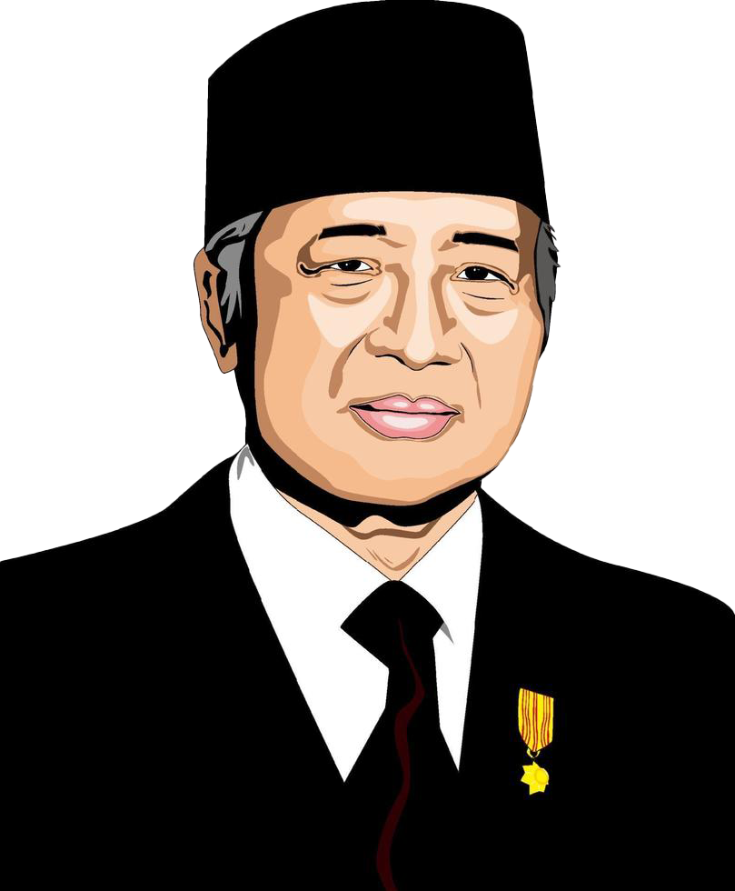

Soeharto
Nama lengkap Soeharto adalah Haji Muhammad Soeharto. Beliau lahir pada 8 Juni 1921 di desa
Kemusuk, sebuah wilayah di dekat Yogyakarta, Indonesia.
Soeharto hidup dalam lingkungan yang penuh dengan nilai-nilai tradisional, dengan latar
belakang sebagai anak petani yang sederhana, Soeharto berhasil meraih posisi
tertinggi sebagai presiden Indonesia.
Soeharto adalah Presiden kedua Indonesia. Secara luas dianggap sebagai diktator militer
oleh pengamat internasional, Soeharto memimpin Indonesia sebagai rezim otoriter.